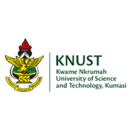

I am a PhD student in the Robust Adaptive Learning Lab at the University of North Texas. I am fortunate to be advised by Prof. Jing Yuan and co-advised by Prof. Shaojie Tang from University of Buffalo. I am broadly working on Submodular Optimization and its applications in machine learning and artificial intelligence.
Before joining UNT, I received my BSc from the Electrical and Computer Engineering Department at the Kwame Nkrumah University of Science and Technology (KNUST) in 2021. I then worked as a research assistant at The Brew-Hammond Energy Centre under Prof. Francis Kemausuor and Dr. F. B. Effah.
Research Interests
- Submodular Optimization: Theory, algorithms, and applications in machine learning and artificial intelligence
- Machine Learning: Robust learning methods, interpretable models, and optimization-driven approaches
- Agentic AI: Autonomous AI agents operating in complex, strategic, and game-theoretic environments
- AI for Algorithm Design: Leveraging large language models to generate, refine, and evaluate algorithms by integrating heuristics, evolutionary methods, and optimization techniques
Selected Publications
The Power of Adaptation: Boosting In-Context Learning through Adaptive Prompting
The 38th Canadian Conference on Artificial Intelligence, 2025
Influencer Marketing Augmented Personalized Assortment Planning: A Two-stage Optimization Problem
Proceedings of the International AAAI Conference on Web and Social Media, 2024
Achieving Long-term Fairness in Submodular Maximization through Randomization
Graphs and Combinatorial Optimization: from Theory to Applications, 2023
Research/Professional Experience
Graduate Research Assistant
University of North Texas
Jan 2023 - Present
Advisor: Prof. Jing Yuan | Co-advisor: Prof. Shaojie Tang
Focus: Submodular Optimization and Applications in Machine Learning
Focus: Submodular Optimization and Applications in Machine Learning
CSL Intern
SRI International
Oct 2025 - December 2025
Multimodal & Agentic AI Research
Data and Computer Science Intern
SRI International
May 2025 - July 2025
Design Custom AI system with seasoned researchers
Research Assistant
The Brew-Hammond Energy Centre, KNUST
Oct 2021 - Oct 2022
Supervisors: Prof. Francis Kemausuor, Dr. F. B. Effah
Conducted research on energy systems and renewable energy technologies
Conducted research on energy systems and renewable energy technologies
Education
PhD in Computer Science and Engineering
University of North Texas
Jan 2023 - Present
Advisor: Prof. Jing Yuan | Co-advisor: Prof. Shaojie Tang
Focus: Submodular Functions and Applications in Machine Learning
Focus: Submodular Functions and Applications in Machine Learning
BSc in Electrical/Electronic Engineering
Kwame Nkrumah University of Science and Technology
2017 - 2021
Teaching & Service
Instructor - Tutorial on Introduction to Deep Learning
University of North Texas
Spring 2024
Guided approximately 70 Master's students through foundational concepts in neural networks, CNNs, RNNs, and modern deep learning architectures
Instructor - Tutorial on Retrieval Augmented Generation
University of North Texas
Fall 2024
Helped approximately 90 Master's students understand retrieval augmented generation techniques through interactive demonstrations and practical applications
Affiliations
2022 - Present
May - December 2025

2017 - 2021

2021 - 2022